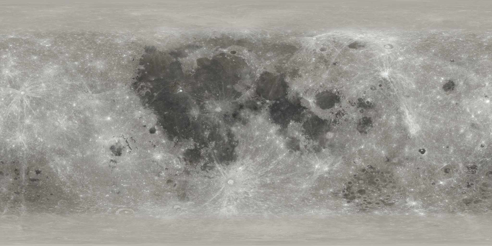
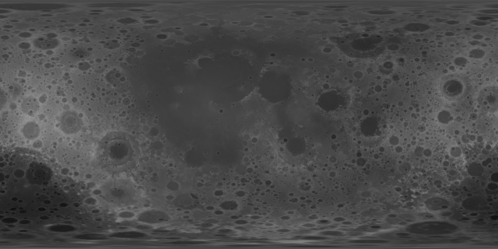
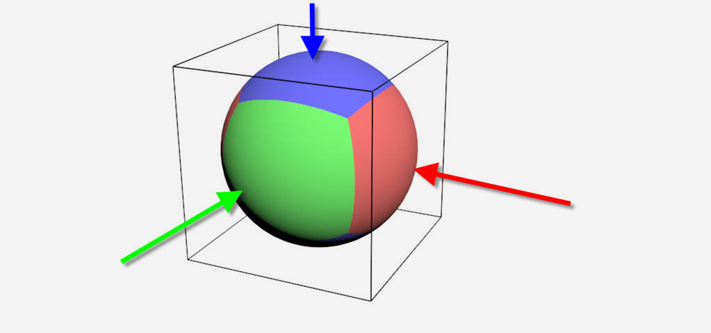

Modeling the Moon at different scales
Created on 2022, last updated on May 2023
The aim is to draw the Moon, or a planet, from different point of views, that vary from an in-orbit space view to a ground view.
Input resources
To model the Moon, the elevation on each point of the surface is needed, as well as the lighting data on each point of the surface. The first one, called "elevation map", defines a displacement along the normal of the surface. It allows to obtain the bumped surface. The second one, called "albedo map" defines how the light is absorbed and reflected. It allows to have the color of the surface.
Since the Apollo missions, the Moon has been mapped with more and more precision, thanks to some satellites. In particular, the NASA has collected user-friendly maps of the Moon. Indeed, the maps cover all the surface in a single texture, using a spherical projection.
High resolution maps are free to download from https://svs.gsfc.nasa.gov/4720:
- Albedo map: up to 27360*13680 (~500Mo)
- Elevation map: up to 23040*11520 (~1Go)
|
 |
 |
| Albedo color map | Elevation map. Dark zones represent low elevation (seas and holes), bright zone represent high elevation (mountains) |
The full-resolution maps cannot be used directly in a game.
Multi-scale method
One of the main methods to have multi-scale is to use tiles, that are refined at some places. The tile refinement level is also called LOD.
Step 1: Define the topology

The main idea is to cut the sphere into countable parts. Any regular polyhedron can approximate a sphere with a finite number of faces. But a cube (which is also a regular polyhedron) lets us to have a trivial mapping:
- the face -X will have a (-1, 0, 0) identifier,
- the face +X will have a (1, 0, 0) identifier,
- the face -Y will have a (0, -1, 0) identifier,
- the face +Y will have a (0, 1, 0) identifier,
- the face -Z will have a (0, 0, -1) identifier,
- the face +Z will have a (0, 0, 1) identifier.
The cube is projected on the unit sphere. This projection is simple to compute because it consists to normalize the vector constructed by any points with the center of the sphere. Each faces can now be subdivided into tiles. A constant ratio is 3 has been selected.
Here an example of the computation of the tile identifier, from a 3D position.
(Click to expand.)
ivec3 getTileIdentifier(vec3 pos, int level)
{
unsigned adressAbsMax = 1;
while (level-- != 0) adressAbsMax *= 3;
adressAbsMax = (adressAbsMax - 1) / 2;
const vec3 posAbs = abs(pos);
int id_cube = pos.x > 0.f ? 0 : 1;
float maxValue = posAbs.x;
if (posAbs.y > maxValue)
{
id_cube = pos.y > 0.f ? 2 : 3;
maxValue = posAbs.y;
}
if (posAbs.z > maxValue)
{
id_cube = pos.z > 0.f ? 4 : 5;
maxValue = posAbs.z;
}
const vec3 uvw_f = 0.5f + 0.5f * pos / maxValue;
const ivec3 uvw = glm::ivec3(uvw_f * float(adressAbsMax * 2 - 1)) - (adressAbsMax - 1);
ivec3 ret;
switch (id_cube)
{
case 0: ret = ivec3( adressAbsMax, uvw.y, -uvw.z); break;
case 1: ret = ivec3(-adressAbsMax, uvw.y, -uvw.z); break;
case 2: ret = ivec3(uvw.x, adressAbsMax, -uvw.z); break;
case 3: ret = ivec3(uvw.x, -adressAbsMax, -uvw.z); break;
case 4: ret = ivec3( uvw.x, uvw.y, -adressAbsMax); break;
case 5: ret = ivec3( uvw.x, uvw.y, adressAbsMax); break;
}
return ret;
}
Step 2: Texturing the tiles

Different textures are created for each tile.
In my case, I need the albedo-texture and normal-texture.
The height could be, either encoded in a map and the application will use a vertex displacement technique, either applied to the mesh.
I prefer the second option because it will require less workload in the final application.
While the computation of the albedo-texture is a re-sample operation,
the computation of the normal-texture implies to get the derivative of the elevation,
along the texture local coordinates.
A re-sampling code is available in TRE,
with the function tre::textureSampler::resample_toCubeMap.
Doing the sampling on CPU is a costly operation.
In fact, the texturing is made offline, and the final application is only loading these textures for rendering.
Lighting and self-shadowing
With the albedo and normal textures, you can use your favorite lighting model. The self-shadowing requires a bit of work, because the relief is obtained from the elevation-map, but not from the geometry.
Soon ...
Adding details on the ground
Even with high-resolution maps, the ground details are poor. Indeed, from these maps, a texel fits with up to 500m-size squares on the ground. To improve the looking when the viewer is on the ground, noise-textures can be used and 3D objects (such as rocks) can be paced on the ground.
Details: Noise-texture
Soon ...
Details: Placing rocks
Soon ...